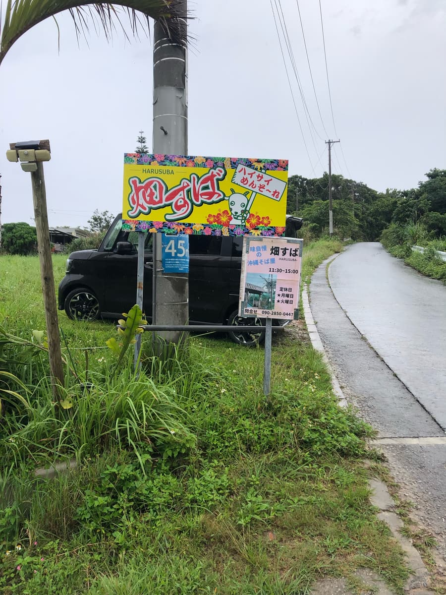
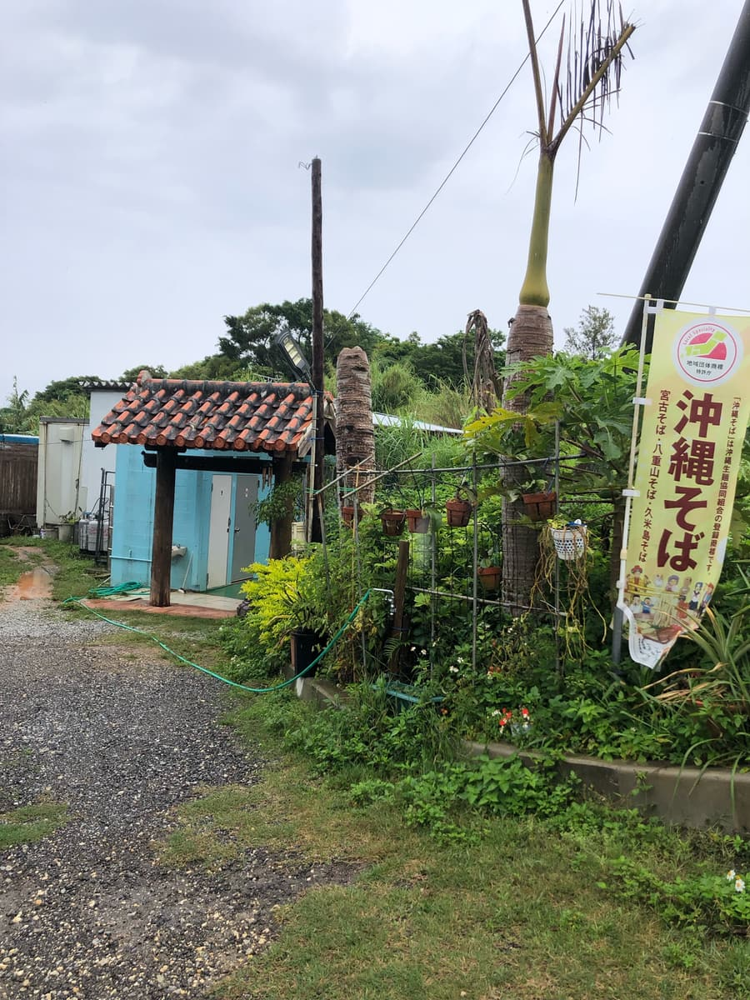
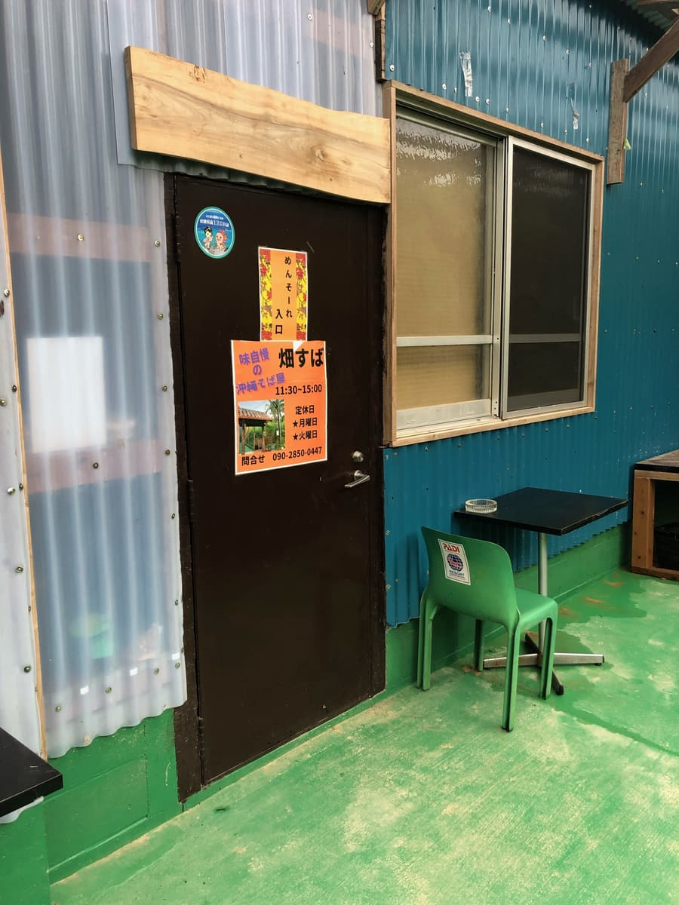
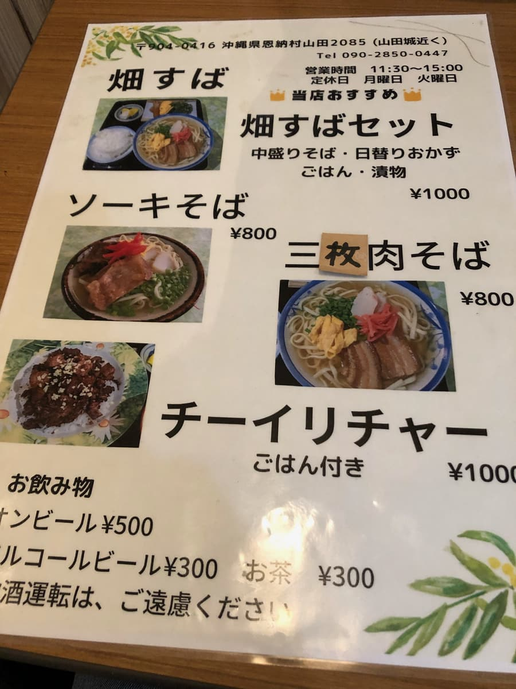
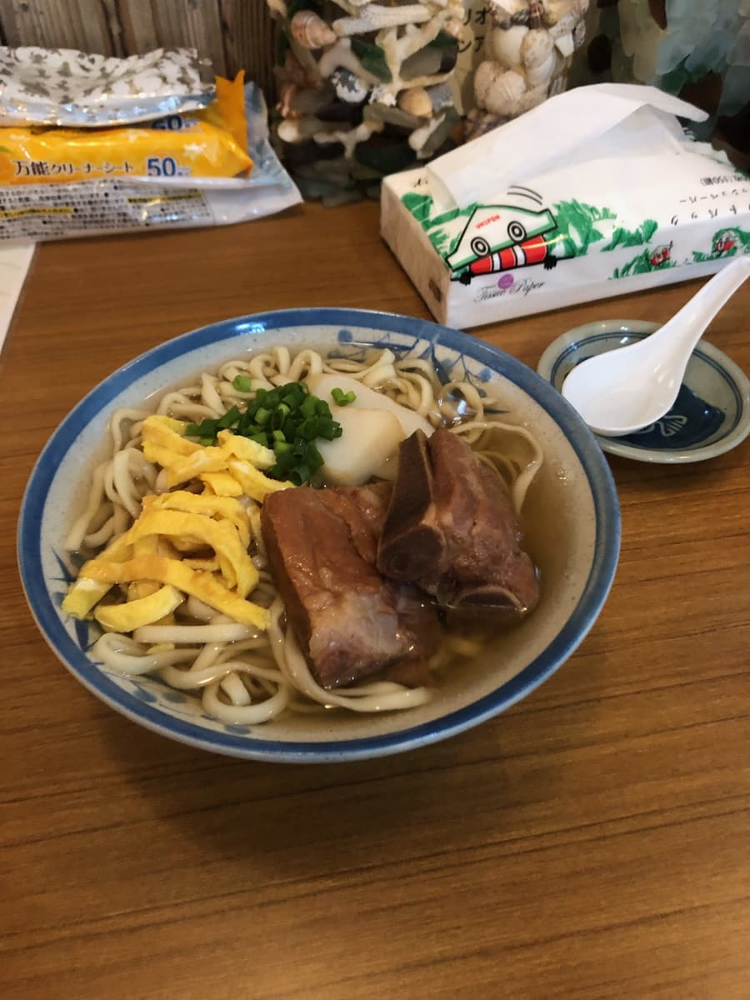
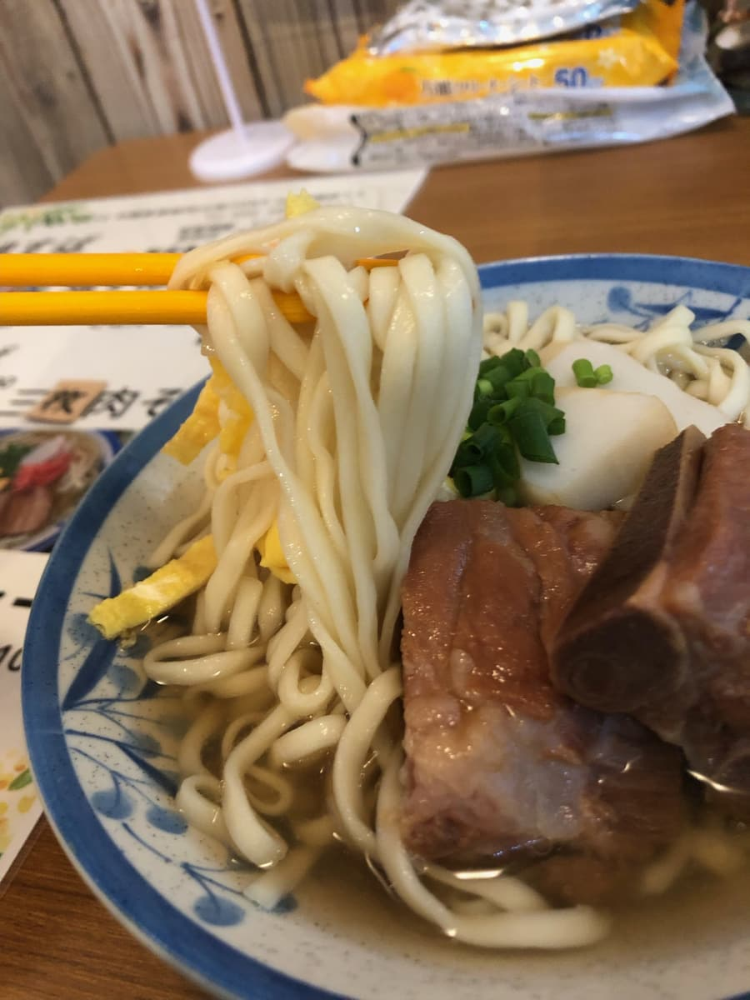

2024年4月吃的😁



這家店，我開車行駛在國道58號時，看到在通往恩納村山田「山田城跡」（我沒去過(^0^;)）的林道般道路上設有看板，一直很在意，所以這次就去了😆
進入林道後，距離算是滿近的。

菜單品項偏少呢。是很有家庭氛圍的店😄 決定點「排骨麵」。

喝一口湯😁 是豬骨味明顯的湯呢。就是很普通的感覺😆

接著吃麵。是中粗直麵，偏軟。帶骨排骨也很軟，偏甜的調味令人印象深刻。
評分（9分/15分）：感覺很普通。雖然離國道很近，但位於要進山的地方，是一間像「孤零零的一間房子」那樣的店😁 因為位在觀光勝地恩納村，來恩納村時要不要來試試呢？
麵：★★★☆☆（3）
湯頭：★★★☆☆（3）
配料：★★★☆☆（3）